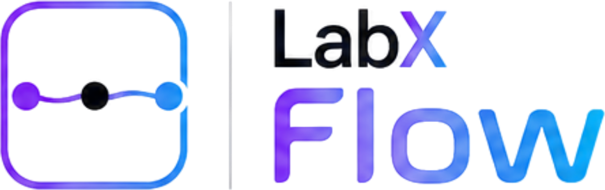

An AI-native creative studio. Generate on a node canvas, design in a vector editor, and let agents create alongside you — one browser workspace.
Three tools most teams juggle separately — in one place. One account, one asset library, one credit balance.
{{ t.desc }}
{{ f.desc }}
Prompt it, refine it, design it, share it — or hand the brief to an agent.